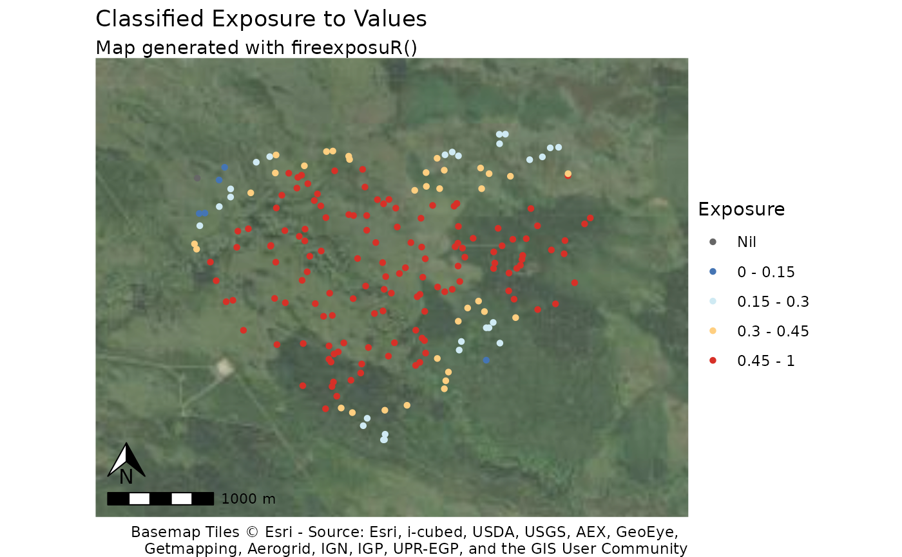

fire_exp_extract_vis() standardizes the visualization of
outputs from fire_exp_extract() as a summary table or a map by classifying
exposure into predetermined exposure classes.
Landscape classification breaks are:
Low (0-20%)
Moderate (20-40%)
High (40-60%),
Very High (60-80%)
Extreme (80-100%)
Local classification breaks are:
Nil (0%)
Low (>0-15%)
Moderate (15-30%)
High (30-45%)
Extreme (45%+)
Arguments
- values_ext
Spatvector of points or polygons from
fire_exp_extract()- method
character, either
"max"or"mean". Ifvalues_extare polygons the default is"max".This parameter is ignored whenvalues_extare point features.- classify
character, either
"local"or"landscape"to specify classification scheme to use. The default is"local"- map
Boolean. When
TRUE, a map is returned as a ggplot object. The default isFALSE.
Examples
# read example hazard data ----------------------------------
filepath <- "extdata/hazard.tif"
haz <- terra::rast(system.file(filepath, package = "fireexposuR"))
# read example AOI polygon geometry
filepath <- "extdata/builtsimpleexamplegeom.csv"
g <- read.csv(system.file(filepath, package = "fireexposuR"))
v <- terra::vect(as.matrix(g), "polygons", crs = haz)
# generate random points within polygon
pts <- terra::spatSample(v, 200)
# ----------------------------------------------------------
exp <- fire_exp(haz)
vals_exp <- fire_exp_extract(exp, pts)
# summarize example points in a table
fire_exp_extract_vis(vals_exp, classify = "local")
#> scale method class n prop
#> 1 local Point Nil 144 0.72
#> 2 local Point Low 26 0.13
#> 3 local Point Moderate 10 0.05
#> 4 local Point High 10 0.05
#> 5 local Point Extreme 10 0.05
# visualize example points in standardized map
fire_exp_extract_vis(vals_exp, map = TRUE)
